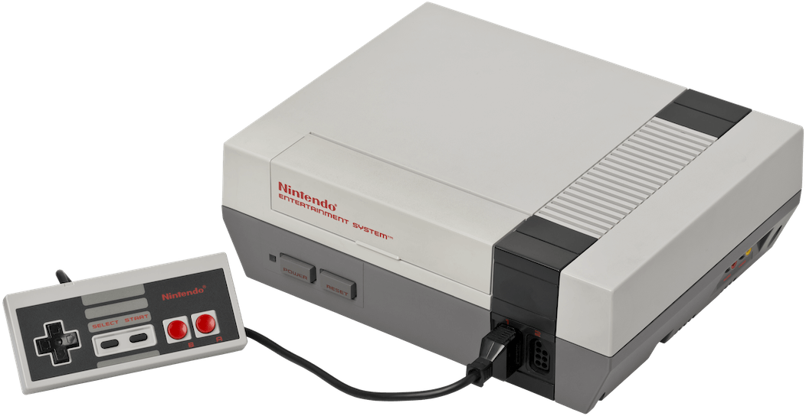
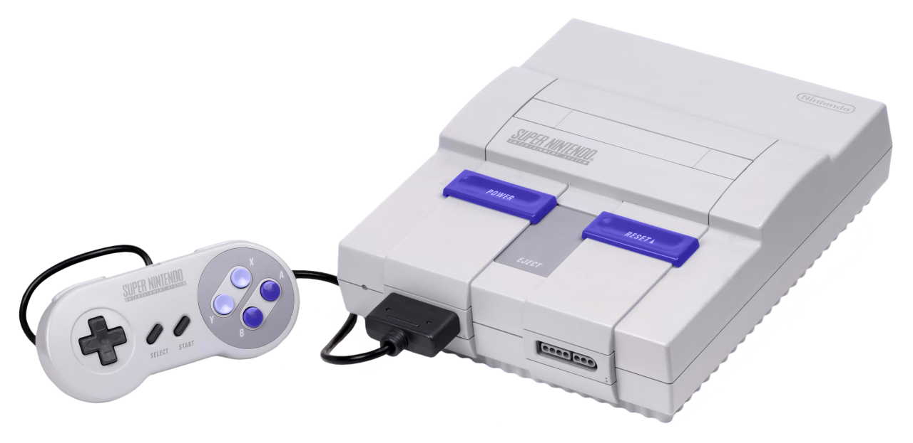
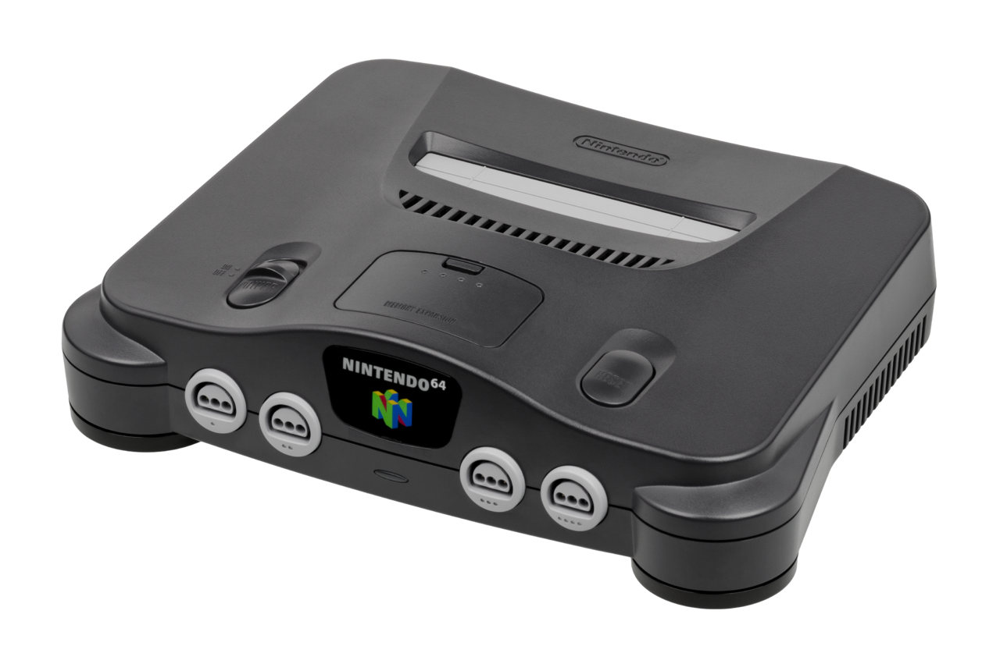
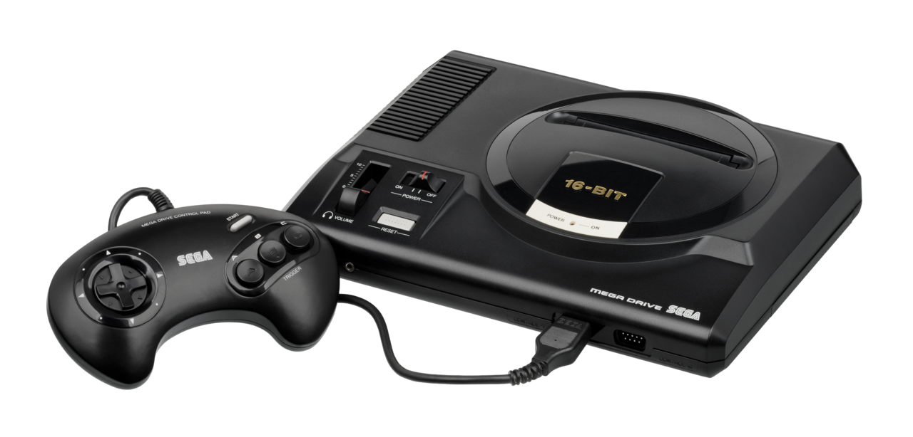
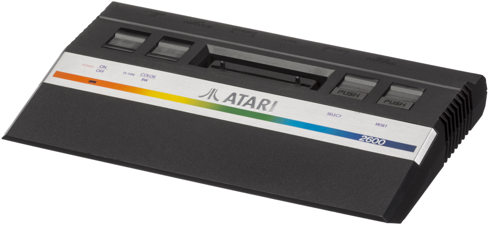
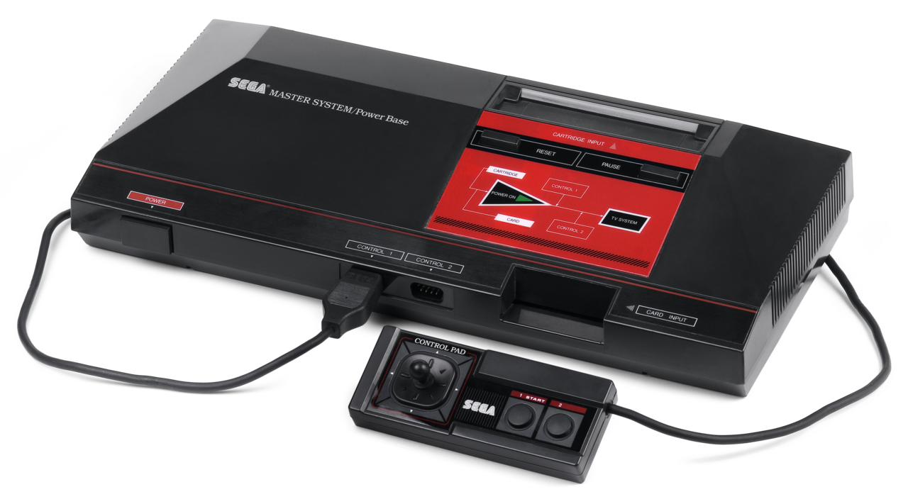
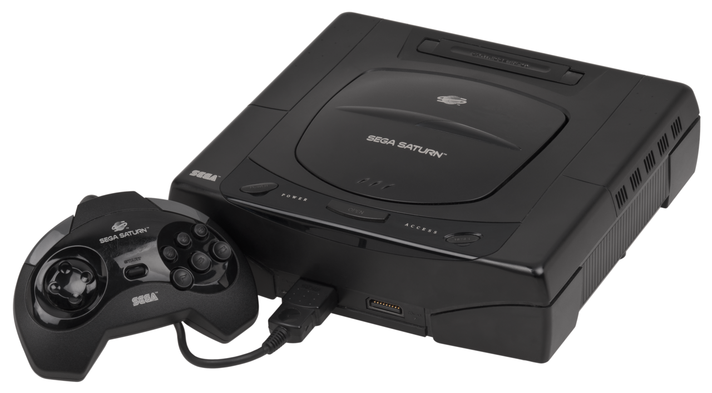
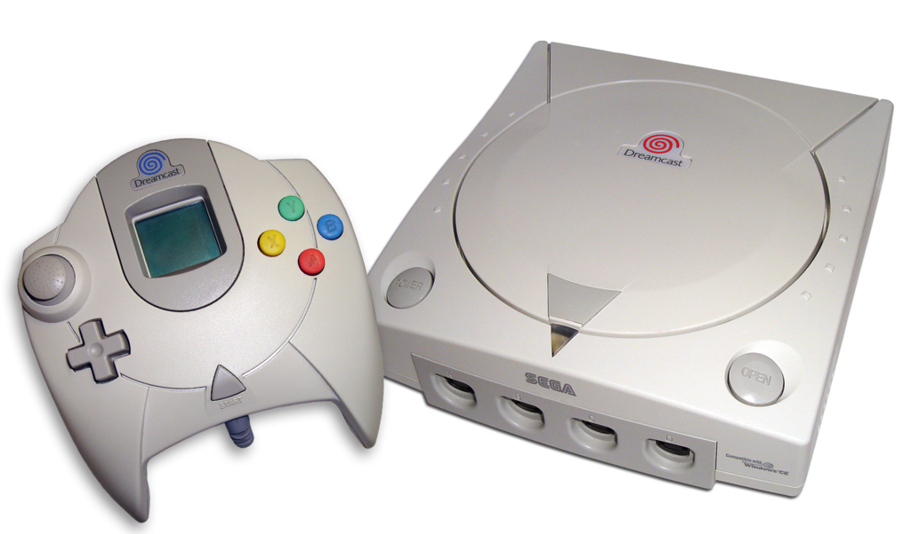

Games By Console
PlayStation

- Gran Turismo 2
- Final Fantasy VII
- Tekken 3
- Metal Gear Solid
- Crash Bandicoot
- ...Plus many more in store!
Nintendo Entertainment System

- Super Mario Bros.
- Duck Hunt
- Tetris
- The Legend of Zelda
- Teenage Mutant Ninja Turtles
- ...Plus many more in store!
Super Nintendo Entertainment System

- Super Mario World
- Donkey Kong Country
- Super Mario Kart
- The Legend of Zelda: A Link to the Past
- Street Fighter II Turbo
- ...Plus many more in store!
Nintendo 64

- Super Mario 64
- Mario Kart 64
- GoldenEye 007
- Super Smash Bros.
- The Legend of Zelda: Ocarina of Time
- ...Plus many more in store!
Sega Mega Drive

- Sonic The Hedgehog
- Aladdin
- Mortal Kombat
- NBA Jam
- Jurassic Park
- ...Plus many more in store!
Atari 2600

- Pac-Man
- Space Invaders
- Donkey Kong
- Pitfall!
- Frogger
- ...Plus many more in store!
Sega Master System

- Phantasy Star
- Road Rash
- Prince Of Persia
- Shinobi
- R-Type
- ...Plus many more in store!
Sega Saturn

- Shinobi Legions
- Radiant Silvergun
- Panzer Dragoon
- Crusader : No Remorse
- Dark Savior
- ...Plus many more in store!
Dreamcast

- Soulcalibur
- Sonic Adventure
- Crazy Taxi
- Marvel vs. Capcom 2
- The House of the Dead 2
- ...Plus many more in store!
Plus many more emulated games and consoles available in store!